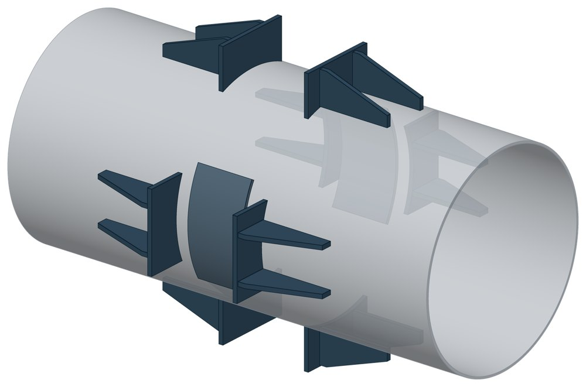
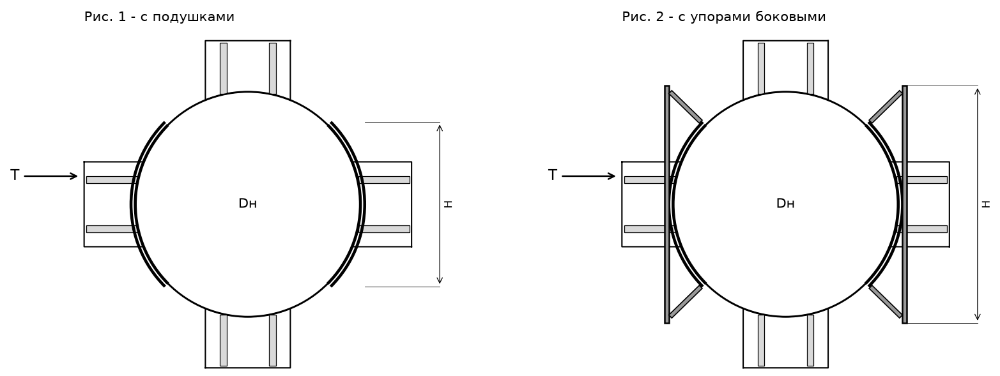

Опора неподвижная боковая ТС-668
Опора для боковой силы — поперёк оси трубы. Восемь упоров стоят на трубе крестом, а по бокам добавлены две детали: подушки (рис. 1) или боковые упоры с плитой (рис. 2).

- Диаметр трубы Dн
- 219–1420 мм
- Документ
- Серия 5.903-13 вып. 7-95
- Исполнений
- 23
- Боковая T
- до 270 кН
- Масса
- 24,5–293,3 кг
- Сталь
- Листовые детали — Ст3сп5 ГОСТ 14637-89. Для холодного климата — низколегированная сталь, в том числе 09Г2С; размеры опоры при этом не меняются.
- Покрытие
- По альбому серии — окраска по грунту, кроме поверхностей под сварку. Вид покрытия согласуется при заказе.
- 3D-модели
- у всех исполнений
Применение и монтаж
Назначение: где применяется
Трубопроводы тепловых сетей Dн 219–1420 мм. Держит боковую силу T от 7,5 до 270 кН. Труба проходит внутри рамы из балок опорной конструкции.
Монтаж: как устанавливается
Упоры приваривают к трубе по обе стороны опорной конструкции, подушки или боковые упоры — на трубу по бокам, в плоскости конструкции. К балкам детали прилегают свободно. По альбому боковую опору можно ставить в сочетании с ТС-660 — ТС-666, по величине осевой нагрузки.
Отличия от соседних типов
Нужна только осевая сила — упорные ТС-660 или ТС-661. Хомутовая ТС-669 боковую силу не воспринимает. Осевая, боковая и вертикальная силы сразу — опоры на корпусе ТС-670 и ТС-671.
Габаритная схема ТС-668

Состав комплекта на одну опору
| Упор (плита с двумя рёбрами) | 8 шт. |
| Подушка (рис. 1) или упор боковой (рис. 2) | 2 шт. |
Таблица исполнений ТС-668
| Обозначение | Код ПРОМБУРГ | Dнмм | Стенка Sмм | TкН | Высота упора Нмм | Длина упора Lмм | Массакг | 3D |
|---|---|---|---|---|---|---|---|---|
| ТС-668.00.00 | ПБ-668-0219-1 | 219 | 6 | 7,5-15 | 164 | 80 | 24,8 | 3D |
| ТС-668.00.00-01 | ПБ-668-0273-1 | 273 | 7 | 10-30 | 200 | 100 | 24,5 | 3D |
| ТС-668.00.00-02 | ПБ-668-0325-1 | 325 | 8 | 10-30 | 240 | 100 | 28,8 | 3D |
| ТС-668.00.00-03 | ПБ-668-0377-1 | 377 | 9 | 20-50 | 277 | 120 | 33,4 | 3D |
| ТС-668.00.00-04 | ПБ-668-0426-1 | 426 | 7 / 9 | 25-60 / 40-90 | 310 | 120 | 59,1 | 3D |
| ТС-668.00.00-05 | ПБ-668-0530-1 | 530 | 7 / 8 / 9 | 35-70 / 40-85 / 50-110 | 388 | 160 | 74,1 | 3D |
| ТС-668.00.00-06 | ПБ-668-0630-1 | 630 | 7 / 9 / 10 / 11 | 40-70 / 60-120 / 80-160 / 90-180 | 327 | 200 | 79,6 | 3D |
| ТС-668.00.00-07 | ПБ-668-0720-1 | 720 | 8 / 10 / 11 / 12 | 50-90 / 70-140 / 80-170 / 100-210 | 372 | 200 | 97 | 3D |
| ТС-668.00.00-08 | ПБ-668-0820-1 | 820 | 8 / 9 / 10 / 12 | 40-90 / 50-110 / 60-130 / 90-190 | 422 | 200 | 102,9 | 3D |
| ТС-668.00.00-09 | ПБ-668-0920-1 | 920 | 8 / 9 / 10 / 12 | 50-100 / 60-120 / 80-160 / 120-270 | 476 | 250 | 122,7 | 3D |
| ТС-668.00.00-10 | ПБ-668-1020-1 | 1020 | 9 / 10 / 11 / 12 / 14 | 60-120 / 70-140 / 80-170 / 100-200 / 120-270 | 526 | 250 | 139,6 | 3D |
| ТС-668.00.00-11 | ПБ-668-1220-1 | 1220 | 9 / 11 / 12 / 14 | 60-120 / 90-180 / 100-200 / 120-270 | 626 | 300 | 185,8 | 3D |
| ТС-668.00.00-12 | ПБ-668-1420-1 | 1420 | 10 / 14 | 60-140 / 120-270 | 726 | 300 | 206,6 | 3D |
| ТС-668.00.00-13 | ПБ-668-0377-2 | 377 | 9 | 70 | 410 | 120 | 44 | 3D |
| ТС-668.00.00-14 | ПБ-668-0426-2 | 426 | 7 | 90 | 460 | 120 | 70,7 | 3D |
| ТС-668.00.00-15 | ПБ-668-0530-2 | 530 | 7 | 90 | 560 | 160 | 93,4 | 3D |
| ТС-668.00.00-16 | ПБ-668-0630-2 | 630 | 7 | 100 | 410 | 200 | 99,4 | 3D |
| ТС-668.00.00-17 | ПБ-668-0720-2 | 720 | 7 | 120 | 460 | 200 | 119,3 | 3D |
| ТС-668.00.00-18 | ПБ-668-0820-2 | 820 | 9 | 220 | 520 | 200 | 140,1 | 3D |
| ТС-668.00.00-19 | ПБ-668-0920-2 | 920 | 10 | 270 | 580 | 250 | 170,1 | 3D |
| ТС-668.00.00-20 | ПБ-668-1020-2 | 1020 | 10 | 270 | 640 | 250 | 191,4 | 3D |
| ТС-668.00.00-21 | ПБ-668-1220-2 | 1220 | 11 | 270 | 750 | 300 | 259,3 | 3D |
| ТС-668.00.00-22* | ПБ-668-1420-2 | 1420 | 14 | 270 | 870 | 300 | 293,3 | 3D |
* Примечания к исполнениям:
- ТС-668.00.00-22 — масса: 239,3 → 293,3, опечатка альбома (перестановка цифр); сумма масс деталей, решение 15 (3d/resheniya-po-albomu-5.903-13.md)
Два значения через дробь — исполнение рассчитано на две толщины стенки трубы.
Чтобы заказать, сообщите обозначение и код ПРОМБУРГ: +7 (499) 325-51-35, promburg@yandex.ru.
Нормативные документы
- Серия 5.903-13 вып. 7-95 Опоры трубопроводов неподвижные. Рабочие чертежи (PDF, 127 с.) — документ, по которому изготавливается изделие
- ГОСТ 14637-89 Прокат толстолистовой из углеродистой стали обыкновенного качества — редакция, на которую ссылается альбом серии; действующую редакцию уточняйте
Связанные позиции
- Соседний тип: ТС-666 — неподвижная щитовая
- Парная подвижная опора: ТС-624 — скользящая приварная (общий диапазон Dн 219–1420)
Собрать узел с этим изделием
- Конструктор узла: собрать участок с компенсатором под свои данные труба, длина, среда, условия — состав узла и спецификация бесплатно
На трубу Dн 219–1420 мм в каталоге
Позиции каталога с исполнениями на те же наружные диаметры трубы.
Детали трубопровода
- Фланец стальной плоский приварной общих Dн: 13
- Фланец стальной воротниковый общих Dн: 12
- Отвод стальной крутоизогнутый 90° общих Dн: 11
- Днище стальное эллиптическое общих Dн: 9
- Отвод стальной крутоизогнутый 90°, 09Г2С общих Dн: 9
- Заглушка стальная эллиптическая общих Dн: 7
- Переход стальной концентрический общих Dн: 6
- Отвод нержавеющий 90° общих Dн: 1
Компенсаторы
- Компенсатор сильфонный стартовый СК общих Dн: 13
- Компенсатор сильфонный 2ОПКР общих Dн: 12
- Компенсатор сильфонный 2ОПКР (ИЯНШ) 2ОПКРИ общих Dн: 12
- Компенсатор сильфонный 2СКУ.М 2СКУМ общих Dн: 12
- Компенсатор сильфонный 2СКУ.М (ИЯНШ) 2СКУМИ общих Dн: 12
- Компенсатор сильфонный 2СКУ.ППМ (ИЯНШ) 2СКУППМИ общих Dн: 12
- Компенсатор сильфонный КС общих Dн: 12
- Компенсатор сильфонный КСО общих Dн: 12
- Компенсатор сильфонный КСО (ИЯНШ) КСОИ общих Dн: 12
- Компенсатор сильфонный КСОФ общих Dн: 12
- Компенсатор сильфонный ОПКР общих Dн: 12
- Компенсатор сильфонный ОПКР (ИЯНШ) ОПКРИ общих Dн: 12
- Компенсатор сильфонный сейсмический общих Dн: 12
- Компенсатор сильфонный СКУ.М СКУМ общих Dн: 12
И ещё 20 типов — в оглавлении каталога.
Другие опоры и подвески
- Опора неподвижная двухупорная ТС-660 общих Dн: 13
- Опора неподвижная четырёхупорная ТС-661 общих Dн: 13
- Опора неподвижная двухупорная усиленная ТС-663 общих Dн: 13
- Опора неподвижная щитовая ТС-666 общих Dн: 13
- Опора скользящая приварная ТС-624 общих Dн: 13
- Опора скользящая хомутовая ТС-626 общих Dн: 13
- Опора катковая двухъярусная ТС-628 общих Dн: 13
- Опорные плиты диэлектрические ТС-632 общих Dн: 13
- Хомутовые опоры СК 2109-92 общих Dн: 13
- Опоры приварные неподвижные скользящие ОПН общих Dн: 13
И ещё 90 типов — в оглавлении каталога.
Другие типы раздела
Неподвижные опоры тепловых сетей (ТС-659…ТС-671)
- Опора неподвижная хомутовая ТС-659
- Опора неподвижная двухупорная ТС-660
- Опора неподвижная четырёхупорная ТС-661
- Опора неподвижная двухупорная усиленная ТС-663
- Опора неподвижная четырёхупорная усиленная ТС-664
- Опора неподвижная двухупорная сальниковых компенсаторов ТС-665
- Опора неподвижная щитовая ТС-666
- Опора неподвижная щитовая усиленная ТС-667
- Опора неподвижная хомутовая бескорпусная ТС-669
- Опора неподвижная хомутовая с корпусом ТС-670
- Опора неподвижная бугельная с корпусом ТС-671
Частые вопросы
Какую неподвижную опору выбрать: хомутовую, упорную, щитовую?
Выбор идёт по расчётной осевой силе и по тому, на что опора опирается. Малый диаметр и небольшая сила — хомутовая ТС-659. Нужна высота под изоляцию — хомутовая с корпусом ТС-670 или бугельная ТС-671. Труба проходит сквозь стенку — щитовая ТС-666, при большой силе усиленная ТС-667. Упор в балку или траверсу — двух- и четырёхупорные ТС-660, ТС-661, при больших нагрузках усиленные ТС-663, ТС-664.
Зачем нужна толщина стенки трубы?
Для Dн от 426 мм в одной позиции серии есть исполнения под разные стенки: геометрия близкая, но допускаемая нагрузка другая — её ограничивают местные напряжения в стенке трубы. Без толщины стенки исполнение однозначно не определить. Пример — щитовая ТС-666 на Dн 530: 400 кН при стенке 7 мм и 550 кН при 9 мм.
Какую нагрузку выдерживает опора?
Допускаемая нагрузка задана в таблице для каждого исполнения — она в первой группе колонок каждой карточки. Хомутовая ТС-659 — осевая Q от 5 до 25 кН, щитовая ТС-666 — от 50 до 3300 кН, хомутовая с корпусом ТС-670 — Q до 380 кН и боковая T до 200 кН.
Кто считает нагрузку на неподвижную опору?
Нагрузку определяет проектировщик расчётом трубопровода на прочность и компенсацию: она зависит от схемы трассы, а не только от диаметра. По заданным Dн, стенке и нагрузкам Q, P, T подбирается исполнение из таблицы.
Серия 5.903-13 заменила 4.903-10? Можно поставить одну вместо другой?
Да: выпуски 7-95 и 8-95 серии 5.903-13 выпущены взамен серии 4.903-10. Типы опор соответствуют друг другу — хомутовая ТС-659 это Т3, щитовая ТС-666 это Т8, хомутовая с корпусом ТС-670 это Т12. Обозначения, единицы нагрузок и часть размеров различаются, поэтому замену в действующем проекте согласуют с проектной организацией.
Что указать в заявке, чтобы получить цену без уточнений?
Обозначение с номером исполнения или код ПБ, количество, Dн и стенку трубы, расчётную температуру наружного воздуха, покрытие, город доставки и желаемый срок. Кнопка «В заявку» в таблице собирает спецификацию, которую можно выгрузить в Excel или отправить письмом.